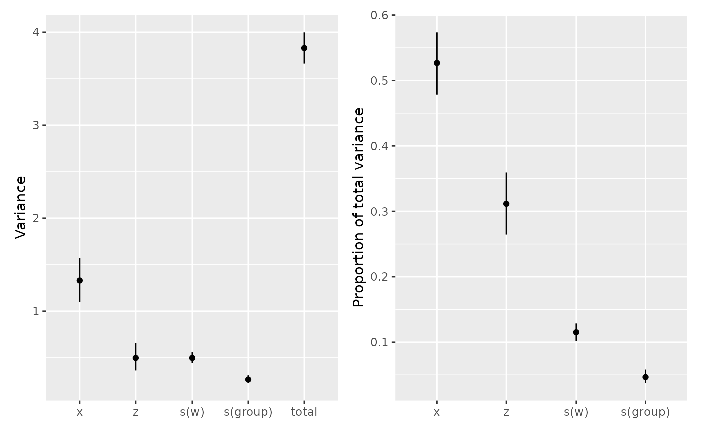
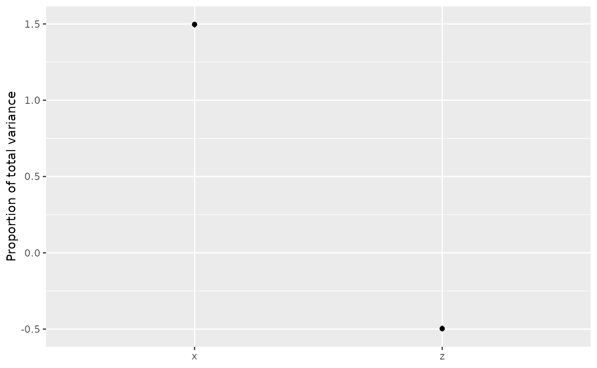

Estimating and interpreting variance components in GAMs
Source:vignettes/articles/variance-components.Rmd
variance-components.RmdUse variance_comp() to answer two questions. How
strongly does the model penalise its smooth and random-effect
coefficients? How much do the fitted contributions of its terms vary
across the observations? The first is about the model’s coefficients.
The second also depends on the observed covariate values. A linear term,
for example, varies more across observations that cover a wider range of
its covariate, even with the same coefficient.
Load {gratia} and {mgcv}, then simulate 360 observations in 12 groups
of 30. We generate z from x plus noise so the
two are positively correlated. We generate w independently
for the nonlinear effect.
library("gratia")
load_mgcv()
set.seed(2026)
dat <- data.frame(x = runif(360, -1, 1), w = runif(360),
group = factor(rep(seq_len(12), each = 30)))
dat$z <- 0.8 * dat$x + rnorm(360, sd = 0.2)The response combines positive linear effects of x and
z with a sine wave in w. Add a Gaussian random
intercept with standard deviation 0.6, shared by all observations in the
same group, and independent Gaussian noise with standard deviation 0.4
for each observation. The two linear effects tend to increase together,
so their covariance increases the variance of their sum.
group_effect <- rnorm(12, sd = 0.6)
dat$y <- 2 * dat$x + 1.5 * dat$z + sin(2 * pi * dat$w) +
group_effect[dat$group] + rnorm(360, sd = 0.4)Fit a model with unpenalised linear terms for x and
z, a smooth for w and a random intercept for
group.
Extract penalty variances and variances of fitted terms
First extract the penalty variances, which describe shrinkage of the
penalised coefficients. The .lower_ci and
.upper_ci columns give interval limits on the standard
deviation scale.
vc_penalty <- variance_comp(model, type = "penalty")
vc_penalty
#> # A tibble: 3 × 5
#> .component .variance .std_dev .lower_ci .upper_ci
#> <chr> <dbl> <dbl> <dbl> <dbl>
#> 1 s(w) 139. 11.8 6.51 21.3
#> 2 s(group) 0.293 0.542 0.354 0.829
#> 3 scale 0.157 0.397 0.368 0.428A penalty variance is the model scale \phi divided by the smoothing parameter \lambda_j. By default, the function expresses
\lambda_j on the scale of the original
penalty matrix, undoing the rescaling mgcv applies during fitting. For a
given penalty, a larger variance corresponds to less shrinkage. There is
one row per penalty, so a smooth can have several rows. For this
Gaussian model the scale row gives the estimated residual
variance. The unpenalised terms x and z appear
in the fitted term table below.
With type = "terms", we measure how much each term’s
fitted contribution varies across the observations used to fit the
model. We use 1,000 draws of the coefficients to calculate intervals and
set a seed to make the draws reproducible.
vc_terms <- variance_comp(model, type = "terms", n_draws = 1000, seed = 42)
vc_terms
#> # A tibble: 5 × 8
#> .component .variance .std_dev .lower_ci .upper_ci .proportion
#> <chr> <dbl> <dbl> <dbl> <dbl> <dbl>
#> 1 x 1.33 1.15 1.05 1.25 0.527
#> 2 z 0.497 0.705 0.602 0.810 0.312
#> 3 s(w) 0.497 0.705 0.665 0.747 0.115
#> 4 s(group) 0.265 0.515 0.477 0.557 0.0466
#> 5 total 3.83 1.96 1.91 2.00 1
#> # ℹ 2 more variables: .proportion_lower_ci <dbl>, .proportion_upper_ci <dbl>These are sample variances on the linear predictor scale, with each observation counted equally. The output includes unpenalised terms and has one row for each smooth, even if it has several penalties. Intercepts, offsets and residual variation are excluded from the calculation.
Account for covariance when comparing terms
The variance of the sum depends on both the term variances and their covariances. Let f_j be term j’s fitted values, F = \sum_j f_j their sum, and C their covariance matrix. Then
\operatorname{Var}(F) = \sum_j C_{jj} + 2\sum_{j<k} C_{jk}.
The result stores the covariance matrix of the fitted contributions across observations. Summing its diagonal gives the sum of the term variances. Summing all entries also accounts for covariance, so it gives the total variance of the combined contributions.
C <- attr(vc_terms, "covariance")
c(sum_of_term_variances = sum(diag(C)),
total_including_covariance = sum(C))
#> sum_of_term_variances total_including_covariance
#> 2.588591 3.829474To divide the total among terms, we split each covariance
contribution, 2C_{jk}, equally between
the two terms. Each term receives its own variance plus its covariance
with every other term, expressed as the proportion p_j = \operatorname{Cov}(f_j, F) /
\operatorname{Var}(F). When the total variance is positive, the
proportions sum to one. Check this by computing only the individual
proportions with include_total = FALSE and skipping
interval calculation with n_draws = 0.
vc_no_total <- variance_comp(model, type = "terms", include_total = FALSE,
n_draws = 0)
sum(vc_no_total$.proportion)
#> [1] 1Intervals for the penalty variances account for uncertainty in the
estimated smoothing parameters and model scale. For intervals on the
fitted term variances, we draw all coefficients together from their
approximate Gaussian posterior distribution. We recompute the fitted
contributions and their variances and proportions for each draw. The
smoothing parameters stay fixed at their estimates by default. Use
unconditional = TRUE to include a correction for
uncertainty in smoothing parameter estimates when the fitted model
supports it. The proportions from each draw are in
attr(vc_terms, "proportion_draws")$total. The interval
limits describe each term separately, so the limits need not sum to
one.
Plot term variances and their proportions
Use {patchwork} to show the variances, including the total, alongside the proportions for the individual terms. Both plots show intervals, with terms on the x-axis.
patchwork::wrap_plots(
draw(vc_terms),
draw(vc_terms, type = "proportion", include_total = FALSE),
ncol = 2
)
Use draw(vc_penalty) for penalty variances or
draw(vc_terms, type = "std_dev") for term standard
deviations. draw() uses the stored intervals, squaring
standard deviation limits when plotting variances. Use
n_dodge = 2 to stagger term labels, angle = 45
to rotate them, or flip = TRUE to put terms on the
y-axis.
Why a term’s proportion can be negative
To show how a proportion can be negative, we reuse the correlated
x and z but give their effects opposite signs.
The new response combines 2 * x - z with Gaussian noise of
standard deviation 0.1, so the two effects partly cancel each other.
Fit both linear terms and plot their proportions with intervals, omitting the total row.
opposing <- gam(contrast ~ x + z, data = dat, method = "REML")
vc_opposing <- variance_comp(opposing, type = "terms", n_draws = 1000, seed = 43)
draw(vc_opposing, type = "proportion", include_total = FALSE)
Their negative covariance reduces the variance of their sum.
Accounting for this covariance gives x a share of 1.5 and
z a share of -0.5. In this example z gets a
negative proportion because its covariance with the contribution of
x is more negative than its own variance is positive. The
proportions still sum to one, so x gets a proportion
greater than one. When the total variance is zero, the proportions are
undefined (NA).